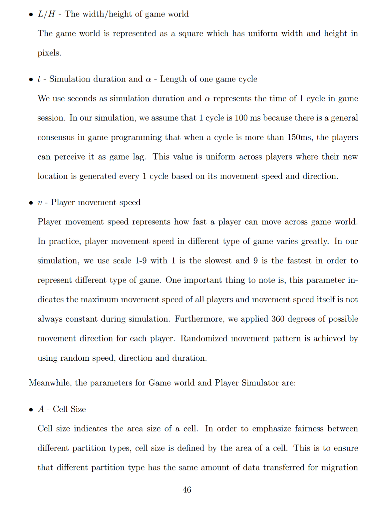

Draft: Simulate larger 3d multiplayer worlds using “brickworlds partition layout”
- Status: draft
- Deciders: V-Sekai,Fire,Groak,
- Tags: V-Sekai,
Context and Problem Statement
Each V-Sekai game server has a scalability limit. Transfer each player to a different server when needed.
Describe the proposed option and how it helps to overcome the problem or limitation
Transfer the state using a database that can handle commits in commit order despite parallel transactions.
Foundationdb is used by Apple for their cloud services and is trusted to handle distributed data safely.
Godot Engine is a game engine where the interiors are easy to rearrange.
Sqlite is a well written database that is fully tested.
Rust is a good language for failures in math or computer language, but does not handle non code errors (like cosmic rays) through language based software redundancy like Erlang.
Mvsqlite merges sqlite with Foundationdb with Rust glue.
Describe how your proposal will work, with code, pseudo-code, mock-ups, or diagrams
- Partition the world into tiles via Prasetya, Kusno’s design.

- Define the tiles with a premigration and migration border.
Premigration and migration border via Prasetya, Kusno’s design.

- Transfer the player from one server to another by first syncing all the frames, and have the player connect to the other side. Then the server does the transfer and the player disconnects from the previous side when the migration boundary is hit.
Server state transfer.
- Test using a multiplayer simulator via Prasetya, Kusno’s design

Positive Consequences
- Allows player transfer from one server to the others servers.
Negative Consequences
- Needs to connect the servers to the foundation database simulation servers.
Option graveyard:
- Option: The status quo.
- Rejection Reason: This solves nothing.
If this enhancement will not be used often, can it be worked around with a few lines of script?
It’s not a few lines of script.
Is there a reason why this should be core and done by us?
We maintain the networking stack.
References
Code References
Create entity table
extends Node3D
func _ready():
var db : SQLite = SQLite.new();
if (!db.open("test")):
print("Failed opening database.");
return;
var _drop : String = """drop table if exists entity;
"""
var _create_entity_table : String = """
CREATE TABLE entity (
id TEXT PRIMARY KEY NOT NULL CHECK(LENGTH(id) = 36),
user_data blob NOT NULL CHECK( LENGTH(user_data) = 16) DEFAULT (zeroblob(16)),
reserved blob NOT NULL CHECK( LENGTH(reserved) = 48) DEFAULT (zeroblob(48)),
shard INTEGER NOT NULL,
code INTEGER NOT NULL,
flags INTEGER NOT NULL,
past_pending BLOB NOT NULL CHECK( LENGTH(past_pending) <= 1024) DEFAULT (zeroblob(64)),
past_posted BLOB NOT NULL CHECK( LENGTH(past_posted) <= 1024) DEFAULT (zeroblob(64)),
current_pending BLOB NOT NULL CHECK( LENGTH(current_pending) <= 1024) DEFAULT (zeroblob(64)),
current_posted BLOB NOT NULL CHECK( LENGTH(current_posted) <= 1024) DEFAULT (zeroblob(64)),
timestamp INTEGER NOT NULL
) WITHOUT ROWID, STRICT;
"""
# db.query(create_entity_table)
var _truncate_entities : String = """
DELETE FROM entity;
"""
# db.query(truncate_entities)
for i in range(32):
var node_3d : Node3D = Node3D.new()
var script = load("res://sqlite_write/sqlite_write_scene.gd")
node_3d.set_script(script)
add_child(node_3d, true)
node_3d.owner = selfSimulate entity processing
extends Node3D
var db : SQLite = null
var result_create : SQLiteQuery
var result_delete : SQLiteQuery
var uuid : String
func _ready():
db = SQLite.new();
if (!db.open("test")):
print("Failed opening database.");
return;
var select_uuid : String = """
SELECT lower(hex(randomblob(4)) || '-' || hex(randomblob(2)) || '-' || '4' ||
substr(hex( randomblob(2)), 2) || '-' ||
substr('AB89', 1 + (abs(random()) % 4) , 1) ||
substr(hex(randomblob(2)), 2) || '-' ||
hex(randomblob(6))) as uuid;
"""
uuid = db.fetch_array(select_uuid)[0]["uuid"]
var query_create_original = """
INSERT INTO entity ("id", "user_data", "reserved", "shard", "code", "flags", "past_pending", "past_posted",
"current_pending", "current_posted", "timestamp")
VALUES (?, zeroblob(16), zeroblob(48), 0, 0, 0, zeroblob(64), zeroblob(64), zeroblob(64), ?, UNIXEPOCH());
"""
result_create = db.create_query(query_create_original)
var query_delete = """
DELETE FROM entity
WHERE id = ?;
"""
result_delete = db.create_query(query_delete)
func _process(_delta):
if db == null:
return
var packed_array : Array = Array()
packed_array.push_back(global_transform)
var bytes : PackedByteArray = var_to_bytes(packed_array)
bytes = bytes.compress(FileAccess.COMPRESSION_ZSTD)
var statement : Array = [uuid, bytes]
var _result_batch = result_create.batch_execute([statement])
func _exit_tree():
var statement : Array = [uuid]
var _result_batch = result_delete.batch_execute([statement])mvsqlite for Windows
cmd
scoop install llvm openssl-mingw llvm-mingw
cargo build --release -p mvsqlite
cd mvsqlite-sqlite3
mingw32-make.exe build-patched-sqlite3
set RUST_LOG=info
set MVSQLITE_DATA_PLANE=http://localhost:7000
sqlite3 test
.tablesCheck fdb status
fdbcli
status
# Force create a database
# configure new single memoryCreate a mvsqlite database
msys2
curl http://localhost:7001/api/create_namespace -i -d '{"key":"test"}'Starting mvstore with foundationdb on Linux
# on Linux
wget https://github.com/apple/foundationdb/releases/download/7.1.15/foundationdb-clients_7.1.15-1_amd64.deb
sudo dpkg -i foundationdb-clients_7.1.15-1_amd64.deb
wget https://github.com/apple/foundationdb/releases/download/7.1.15/foundationdb-server_7.1.15-1_amd64.deb
sudo dpkg -i foundationdb-server_7.1.15-1_amd64.deb
cargo build --release -p mvstore
RUST_LOG=info ./mvstore \
--data-plane 127.0.0.1:7000 \
--admin-api 127.0.0.1:7001 \
--metadata-prefix mvstore \
--raw-data-prefix mStarting mvstore with foundationdb on Windows
cmd
cargo build --release -p mvstore
set RUST_LOG=info
mvstore --data-plane 127.0.0.1:7000 --admin-api 127.0.0.1:7001 --metadata-prefix mvstore --raw-data-prefix m --cluster "C:/ProgramData/foundationdb/fdb.cluster"Launch scripts
start-sqlite3.bat
set RUST_LOG=info
set MVSQLITE_DATA_PLANE=http://localhost:7000
sqlite3 teststart-mvstore.bat
set RUST_LOG=error
mvstore --data-plane 127.0.0.1:7000 --admin-api 127.0.0.1:7001 --metadata-prefix mvstore --raw-data-prefix m --cluster "C:/ProgramData/foundationdb/fdb.cluster"License of the contribution
Copyright (c) 2022 V-Sekai contributors.
Permission is hereby granted, free of charge, to any person obtaining a copy of this software and associated documentation files (the “Software”), to deal in the Software without restriction, including without limitation the rights to use, copy, modify, merge, publish, distribute, sublicense, and/or sell copies of the Software, and to permit persons to whom the Software is furnished to do so, subject to the following conditions:
The above copyright notice and this permission notice shall be included in all copies or substantial portions of the Software.
THE SOFTWARE IS PROVIDED “AS IS”, WITHOUT WARRANTY OF ANY KIND, EXPRESS OR IMPLIED, INCLUDING BUT NOT LIMITED TO THE WARRANTIES OF MERCHANTABILITY, FITNESS FOR A PARTICULAR PURPOSE AND NONINFRINGEMENT. IN NO EVENT SHALL THE AUTHORS OR COPYRIGHT HOLDERS BE LIABLE FOR ANY CLAIM, DAMAGES OR OTHER LIABILITY, WHETHER IN AN ACTION OF CONTRACT, TORT OR OTHERWISE, ARISING FROM, OUT OF OR IN CONNECTION WITH THE SOFTWARE OR THE USE OR OTHER DEALINGS IN THE SOFTWARE.